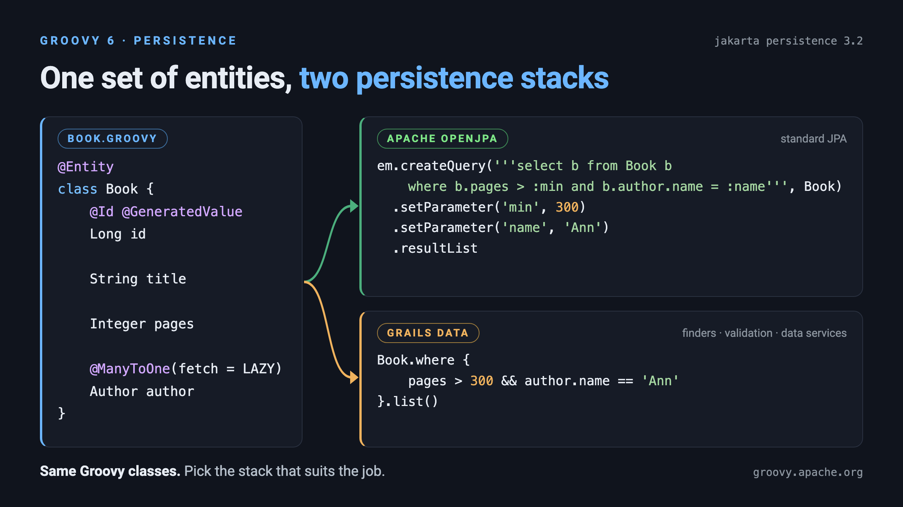

Groovy® Persistence Two Ways: OpenJPA and Grails® Data
Published: 2026-11-23 08:00AM
Introduction
Apache OpenJPA gives Groovy standard Jakarta Persistence. Grails Data gives it finders, compile-time checked queries, validation and data services, and it doesn’t need a Grails application. In this post we run the same Groovy entity classes on both, and look at when you might pick each.

Many Groovy users know persistence through Grails and GORM, which lives on today as Apache Grails Data. Others use the Jakarta Persistence (JPA) API directly. These can look like separate worlds, but Grails Data understands JPA annotations, so one set of entity classes can serve both.
We’ll use these two classes throughout:
@Entity
class Author {
@Id @GeneratedValue
Long id
String name
@OneToMany(mappedBy = 'author', fetch = FetchType.LAZY)
List<Book> books = []
}
@Entity
class Book {
@Id @GeneratedValue
Long id
String title
Integer pages
@ManyToOne(fetch = FetchType.LAZY)
Author author
}They import only jakarta.persistence. We’ll run them first on
Apache OpenJPA, then on Grails Data with Hibernate,
and finally look at mixing the two.
The tested code, along with notes on smaller details, is in the
groovy-openjpa companion repo.
For the examples we use Groovy 6.0.0 and H2. We picked a Grails Data 9 snapshot, for alignment with Groovy 6, and an OpenJPA 4.3.0 snapshot, to incorporate a few recent bug fixes. Both come from the Apache snapshots repository:
repositories {
mavenCentral()
maven {
url = 'https://repository.apache.org/content/groups/snapshots'
mavenContent { snapshotsOnly() }
}
}Standard JPA with OpenJPA
Enhancing Groovy classes
OpenJPA tracks changes and lazy loading by enhancing entity bytecode. Its enhancer
works on class files, so it doesn’t mind that groovyc produced them.
We list the classes in META-INF/persistence.xml:
<persistence xmlns="https://jakarta.ee/xml/ns/persistence" version="3.2">
<persistence-unit name="library">
<provider>org.apache.openjpa.persistence.PersistenceProviderImpl</provider>
<class>library.Author</class>
<class>library.Book</class>
<exclude-unlisted-classes>true</exclude-unlisted-classes>
<properties>
<property name="jakarta.persistence.jdbc.driver" value="org.h2.Driver"/>
<property name="jakarta.persistence.jdbc.url" value="jdbc:h2:mem:library;DB_CLOSE_DELAY=-1"/>
<property name="openjpa.jdbc.SynchronizeMappings" value="buildSchema(ForeignKeys=true)"/>
<property name="openjpa.RuntimeUnenhancedClasses" value="unsupported"/>
</properties>
</persistence-unit>
</persistence>A small Gradle task then runs the enhancer over the compiler output:
def enhance = tasks.register('enhance', JavaExec) {
def classesDir = sourceSets.main.groovy.destinationDirectory
dependsOn tasks.named('compileGroovy'), tasks.named('processResources')
classpath = files(classesDir, sourceSets.main.output.resourcesDir) +
configurations.runtimeClasspath
mainClass = 'org.apache.openjpa.enhance.PCEnhancer'
args '-d', classesDir.get().asFile.absolutePath
outputs.upToDateWhen { false }
}
tasks.named('classes') { dependsOn enhance }Lazy loading and dirty tracking then work as they do for Java entities,
from both dynamic and @CompileStatic Groovy code.
Jakarta Persistence 3.2 in Groovy
OpenJPA 4.2 and later implement Jakarta Persistence 3.2, whose new transaction methods take functional interfaces, so Groovy closures fit nicely:
var emf = Persistence.createEntityManagerFactory('library')
emf.runInTransaction { em ->
var ann = new Author(name: 'Ann')
em.persist(ann)
em.persist(new Book(title: 'Long', pages: 900, author: ann))
em.persist(new Book(title: 'Short', pages: 100, author: ann))
}
var titles = emf.callInTransaction { em ->
em.createQuery('select b.title from Book b where b.pages > :min', String)
.setParameter('min', 300)
.resultList
}
assert titles == ['Long']Other 3.2 features work too. A Groovy record can be an embeddable:
@Embeddable
record Price(BigDecimal amount, String currency) {}JPQL gains || concatenation, left() and set operations:
em.createQuery('select a.name from Author a union select b.title from Book b', String)
.resultListOne Groovy feature to avoid
Groovy’s direct field access operator, obj.@field, compiles to a plain field access from
outside the class. An enhanced entity relies on intercepting field access,
so .@ from outside skips it:
emf.runInTransaction { em ->
var author = em.find(Author, id)
assert author.@books == null // lazy field not loaded
assert author.books.size() == 2 // normal property access loads it
author.@name = 'Lost update' // not tracked, so never written
}Use normal property access on managed entities and both problems disappear.
Single-file scripts
PersistenceConfiguration, also new in 3.2, removes the need for persistence.xml, so
a complete persistent application fits in a script:
@GrabResolver(name = 'apache-snapshots', root = 'https://repository.apache.org/content/groups/snapshots')
@Grab('org.apache.openjpa:openjpa:4.3.0-SNAPSHOT')
@Grab('com.h2database:h2:2.5.252')
import jakarta.persistence.*
@Entity
class Author {
@Id @GeneratedValue Long id
String name
@OneToMany(mappedBy = 'author') List<Book> books = []
}
@Entity
class Book {
@Id @GeneratedValue Long id
String title
@ManyToOne Author author
}
var config = new PersistenceConfiguration('library')
.provider('org.apache.openjpa.persistence.PersistenceProviderImpl')
.managedClass(Author)
.managedClass(Book)
.property(PersistenceConfiguration.JDBC_DRIVER, 'org.h2.Driver')
.property(PersistenceConfiguration.JDBC_URL, 'jdbc:h2:mem:library;DB_CLOSE_DELAY=-1')
.property('openjpa.jdbc.SynchronizeMappings', 'buildSchema(ForeignKeys=true)')
.property('openjpa.Log', 'DefaultLevel=WARN')
.property('openjpa.RuntimeUnenhancedClasses', 'supported')
var emf = config.createEntityManagerFactory()
emf.runInTransaction { em ->
var dierk = new Author(name: 'Dierk')
em.persist(dierk)
['Groovy in Action', 'ReGinA'].each { em.persist(new Book(title: it, author: dierk)) }
}
var em = emf.createEntityManager()
em.createQuery('select b from Book b order by b.title', Book).resultList.each {
println "$it.title by $it.author.name"
}
em.close()
emf.close()A script’s classes are loaded before the enhancer can reach them, so this uses OpenJPA’s runtime subclassing instead. It logs a warning and loads to-one relations eagerly, which is a fair trade for a script but not what you’d want in an application.
Grails Data without Grails
Grails Data is usable as a plain library, with no Grails application and no Spring Boot. It needs Java 21 and one dependency, plus a JDBC driver:
implementation "org.apache.grails.data:grails-data-hibernate7-core:$grailsDataVersion"
runtimeOnly "com.h2database:h2:$h2Version"Spring libraries still come along transitively, but there’s no application framework to configure. A single constructor starts the datastore:
var config = ['dataSource.url' : 'jdbc:h2:mem:library;DB_CLOSE_DELAY=-1',
'dataSource.dbCreate': 'create-drop']
new HibernateDatastore(config, Author, Book).withCloseable { datastore ->
Book.withTransaction {
Book.where { pages > 500 && author.name == 'Dierk' }.list().each {
println "$it.title by $it.author.name"
}
}
}Grails Data’s global AST transform turns any @jakarta.persistence.Entity class into a GORM entity,
so our Author and Book get the full API without any source changes:
Book.withTransaction {
assert Book.count() == 2
assert Book.findByTitle('Short').author.name == 'Ann'
assert Book.where { pages > 300 && author.name == 'Ann' }.list()*.title == ['Long']
}Queries checked by the compiler
The closure passed to where isn’t run as ordinary code. An AST transform converts it to a
query at compile time, against the entity’s properties. Queries compose, and a typo
fails the build:
def big = Book.where { pages > 300 }
def annsBig = big.where { author.name == 'Ann' }
Book.where { pagez > 1 }
// Cannot query on property "pagez" - no such property on class library.Book exists.Idiomatic domain classes and data services
If a class doesn’t need to stay plain JPA, the native GORM style is more compact and adds declarative constraints:
@grails.gorm.annotation.Entity
class Book {
String title
Integer pages
Author author
static belongsTo = [author: Author]
static constraints = {
title blank: false
pages min: 1
}
}Data services go a step further. You declare an interface and the compiler implements it,
checking finder names and the properties used in @Query:
@Service(Book)
interface BookCatalog {
List<Book> findByPagesGreaterThan(Integer pages)
Number countByAuthor(Author author)
@Query("from ${Book b} where ${b.pages} > $min order by ${b.title}")
List<Book> longerThan(Integer min)
}We get the implementation from the datastore:
var catalog = datastore.getService(BookCatalog)
assert catalog.longerThan(300)*.title == ['Long']Mixing the two
Since the classes are shared, can GORM’s queries run on OpenJPA? Grails Data’s
JpaQueryBuilder can turn a GORM query into JPQL, so a small bridge
hands that JPQL to an OpenJPA EntityManager. The bridge is
GormJpql
in the companion repo:
var big = Book.where { pages > 200 }
var annsBig = big.where { author.name == 'Ann' }
GormJpql.list(em, annsBig) // managed OpenJPA entities with lazy associationsThe compile-time checking carries over. Comparisons, logic, like, in, ranges, association paths,
criteria, ordering, projections and pagination all worked in our testing.
The bridge adjusts the generated JPQL for ilike and distinct, and subqueries
as comparison values aren’t supported.
This is an experiment rather than a supported path. An in-memory datastore is still needed
to initialise GORM’s metadata, Book.where { }.list() itself isn’t wired to OpenJPA,
and the builder’s select path sees little production use.
It does hint at what a full OpenJPA provider for Grails Data could look like. The Grails Data core is about 75,000 lines of code with a single Hibernate import, so its query model is largely independent of the provider. The Hibernate 7 module, at about 37,000 lines with 830 Hibernate imports, shows where the real work would be: mapping and session integration.
Which should you use?
| OpenJPA | Grails Data | |
|---|---|---|
API |
Standard Jakarta Persistence |
GORM, on top of Hibernate |
Queries |
JPQL strings and Criteria API |
Finders, |
Query checking |
At run time |
At compile time for |
Validation |
Separate, through Bean Validation |
Built-in |
Repository layer |
Write your own |
Generated data services |
Dependencies |
Small |
Larger, including Spring libraries |
Java |
17+ |
21+ |
Choose OpenJPA when you want the standard API, a small footprint, or portability between JPA providers.
Choose Grails Data when you want more done for you by the compiler, even in an application that
has nothing else to do with Grails.
Because a plain @Entity model works with both, it isn’t a decision you have to get right on day one.
Conclusion
Groovy works well with standard JPA through OpenJPA, with one operator to avoid. Grails Data is just as approachable outside Grails, needing little more than a constructor call. Starting from one set of entity classes, you can use whichever suits the job.
Further information
-
Apache Grails, including Grails Data
-
groovy-openjpa companion repo, including notes on versions and gotchas
-
Build a Spring Boot application with GORM, an earlier guide to using GORM outside Grails